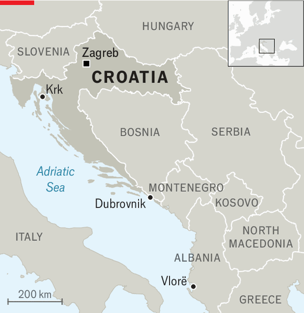

America’s Balkan policy is all about gas
It is using its terminal in Krk to shoulder the green EU aside
July 2nd 2026

THE CROATIAN island of Krk is bereft of vowels but rich in gorgeous beaches. Flying into the island’s airport, holidaymakers might notice what looks like a ship at anchor. In fact, it is a floating liquefied natural gas (LNG) terminal. Since its completion in 2021 it has become a crucial European node for importing LNG, mostly but not entirely from America. It is also part of the reason why American and European aims in the region, which for decades were aligned, are increasingly at odds. In the six western Balkan countries that are not members of the European Union, America First policies are starting to bulldoze the EU out of the way.
The disagreement was evident at a meeting in April in Dubrovnik, another Croatian beach resort, of EU members from the Adriatic, Baltic and Black Sea regions. America was represented at the Three Seas Initiative summit by Chris Wright, its energy secretary. Mr Wright touted a “Trump Peace Pipelines Framework”, which he said would allow central and eastern Europe to replace its remaining dependence on Russia’s gas with America’s. Croatia signed an agreement at the summit to connect Krk to Bosnia, which now gets all of its gas from Russia. Also in April, an American company signed a $6bn deal to supply LNG to Albania.

All of this is evidence that America aims to do more than end Russian energy imports to Europe. It is seeking, as the National Security Strategy of November 2025 said, to restore “energy dominance”, to “project power” and roll back what it sees as harmful European climate policies that “threaten the United States”. Western Balkan countries currently use little gas, and the EU wants eventually to phase out its use of the fuel. Europeans fear that replacing Russian with American gas will undermine the countries’ transition to renewables and make it hard for them to align their energy legislation with that of the EU, which they seek to join.
The American push is likely to benefit political and business associates of Donald Trump, who will probably win infrastructure and service contracts, says Ivan Brodic, editor of Energypress, a Croatian energy news site. The gas interconnector linking Bosnia and Croatia, for example, had been discussed for years. But the country’s politicians, divided on ethnic lines between Bosniaks (Muslims), Croats and Serbs, had never been able to agree on it. In April, however, the Bosnians suddenly amended a law and named an American-owned company with no previous experience in gas or pipelines as the main investor in the project. The company’s directors include a former lawyer of Mr Trump and the brother of Michael Flynn, his former national security adviser.
Mr Flynn is a lobbyist for Milorad Dodik, the pro-Russian de facto leader of the Serbian half of Bosnia. Mr Dodik is already benefiting from the Trump administration’s interventions. In May Christian Schmidt, the High Representative in Bosnia (an international overseer created under the 1995 peace settlement which ended the country’s civil war), said he was resigning, under American pressure. He had objected to the no-tender award of the gas contract, which contravenes EU rules. Mr Schmidt had long clashed with Mr Dodik. American policy in Bosnia, says Adi Cerimagic, an analyst, is now “driven by these investors and by these investments”.
The importance of energy investments to American policy extends throughout the region. Gazprom, Russia’s state-owned gas firm, has long held a controlling interest in NIS, Serbia’s biggest oil-and-gas company. But American sanctions on Russia are forcing it to sell its stake to MOL, a Hungarian state-owned energy firm. Mr Brodic expects America will strong-arm Serbia into buying American LNG. And America’s interest goes beyond gas. This month Serbia’s government issued a call for proposals for a new hydroelectric power plant; only American companies, it specified, need apply.
North Macedonia, too, was previously dependent on Russian gas. In February it signed an agreement committing to buy American LNG. Tiny Kosovo is also in America’s sights. It has no pipeline connecting it to the region’s gas networks. In 2021 Albin Kurti, its prime minister, suspended a project to link the country to North Macedonia.
Still, just before Kosovo’s election on June 7th, the American chargé d’affaires in the country urged it to revive that project, warning it otherwise risked being the only western Balkan country “without access to American LNG”. This was widely seen as an appeal to vote against Mr Kurti. He won, but may yet go ahead with the pipeline. The message from America is clear: if you want to keep our support, ignore the Europeans, and buy our gas.
Where American LNG helps Balkan countries stop buying Russian gas, the EU welcomes it. The problem for Europeans is the use of coercion and the promise of benefits to cronies on both the American and Balkan sides to push the deals through. They also deplore the possibility that southern European countries with plenty of solar, wind and hydropower potential might instead be pushed to use American gas. Europeans, with their good-government regulations and green objectives, have trouble competing with firms that offer personal benefits to Balkan bigwigs who sign up for gas deals. But in a world where rules are giving way to power, they may have to work out how to match America’s bid. ■
To stay on top of the biggest European stories, sign up to Café Europa, our weekly subscriber-only newsletter.